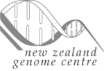
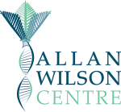
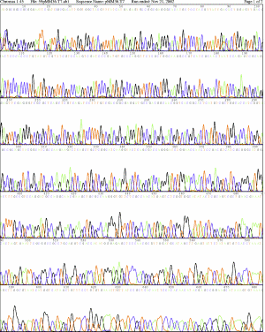

|

Introduction Services Offered Results Pricing Contact Us |

Results The NZGC operates on a turnaround time of 48 hours (two working days) for a Full Sequencing Service and 24hrs (1 working day) for a capillary separation service. Results are delivered electronically, either via our web-based download system or via e-mail. Electropherograms can be mailed to the customer on request. |